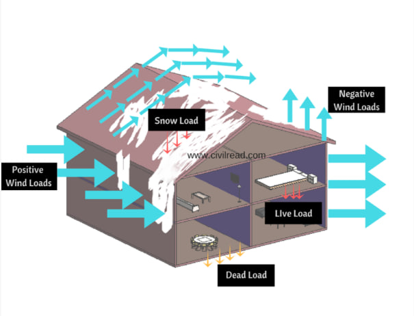

Transfer Functions

Engineers use rational functions to model the response of a building or structure to various loads, such as wind, seismic, or gravity loads. These functions help analyze how the structure deforms and redistributes loads. Finite element analysis and other numerical techniques often involve rational functions to approximate the behavior of complex structures.